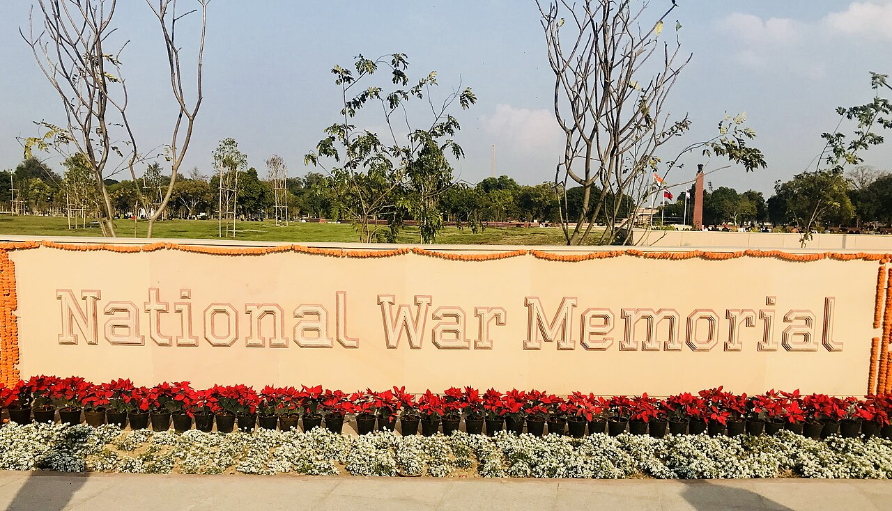

Literature · Craft
Why War Poetry Still Matters: From Flanders to the Indian Soldier-Poet

People sometimes ask why a young writer would spend his first book on soldiers and the families they leave behind. It is a fair question. We live in an age of fast feeds and faster forgetting, and war can feel like history's business, not poetry's. But I have come to believe the opposite: that war is exactly where poetry earns its keep, because it is asked to do the one thing statistics cannot — make us feel a number we could never otherwise hold.
This is not a new idea. For more than a century, some of the most enduring poems in any language have come straight out of the trenches, the field hospitals, and the homes left waiting. To understand why these verses still matter, it helps to look at where the tradition began.
History tells us how many died. Poetry insists that we remember they lived.
The poem that called a lie a lie
No poet shaped how we read war more than Wilfred Owen, a young English officer killed in action on 4 November 1918 — just one week before the Armistice that ended the First World War.[1] In his most famous poem, "Dulce et Decorum Est," Owen describes a gas attack in unbearable, specific detail, then turns on the old Latin motto from the Roman poet Horace — dulce et decorum est pro patria mori, "it is sweet and fitting to die for one's country." Owen calls it "the old Lie."[1]
What makes the poem immortal is not that it is anti-war or pro-war, but that it refuses abstraction. It will not let us hide behind a noble phrase. It drags the reader to the side of one dying man and makes us watch. That is the whole moral engine of war poetry: it converts slogans back into people.
Owen did not write alone. He was one voice in an extraordinary generation of soldier-poets that included Siegfried Sassoon, his friend and mentor, whose bitter, biting verse raged against the generals and politicians who spent young lives so freely, and Rupert Brooke, whose earlier, idealistic poem "The Soldier" imagined "some corner of a foreign field that is forever England" before he himself died on the way to Gallipoli in 1915.[1] Between Brooke's romance and Sassoon's fury lies the whole emotional range of how human beings try to make sense of war — and it is poetry, not the history textbook, that preserves that range. The facts of the First World War can be summarised in a paragraph. The feeling of it survives because these men wrote it down in verse.
The flowers of Flanders
Consider how much a single poem can change. In 1915, a Canadian military doctor named John McCrae wrote "In Flanders Fields" after burying a friend, opening with the image of poppies blowing between the rows of crosses.[2] That poem did something almost no poem ever does: it gave the world a symbol. The remembrance poppy, worn every November across much of the Commonwealth, grew directly out of McCrae's fifteen lines.[2]
Think about that. A grieving doctor's verse became a flower pinned to millions of coats a hundred years later. No government decree could have manufactured that. Only a poem, doing what poems do — turning grief into an image small enough to carry and large enough to share.
India's own tradition
This is not only a Western inheritance. India has a deep and living tradition of patriotic verse. Rabindranath Tagore, the first non-European to win the Nobel Prize in Literature, gave the nation "Where the mind is without fear" — not a battle cry, but a prayer for the kind of free country worth defending.[3] He also wrote the words that became the national anthems of both India and Bangladesh.
In Hindi, Subhadra Kumari Chauhan's "Jhansi ki Rani" — with its unforgettable refrain about the queen of Jhansi who "fought like a man" in 1857 — is still recited by schoolchildren across the country, keeping a freedom fighter alive in the national memory generations after her death.[4] Poets like Ramdhari Singh "Dinkar," honoured as a Rashtrakavi (national poet), carried that flame of stirring, public verse into independent India.[5]
From Flanders to Jhansi, the instinct is the same: when something matters too much to be said plainly, a people reaches for poetry.
When a poem becomes an anthem
Nowhere is poetry's strange power clearer than in how often a single Indian poem has grown into a song the whole country sings. Bankim Chandra Chatterjee's "Vande Mataram," composed in the 1870s and woven into his novel Anandamath, became a rallying cry of the freedom movement and, later, the national song of India.[6] The poet Muhammad Iqbal's "Saare Jahan Se Achha," written in 1904, is still sung at parades and by schoolchildren more than a century on, and is said to be a favourite marching tune of the Indian Army.[7]
These were not written as policy or propaganda. They were written as verse — chosen words in a chosen rhythm — and that is precisely why they lodged in the collective memory and would not leave. A committee can draft a slogan; only a poet can write a line a soldier hums on the way up a mountain. That is the quiet, stubborn influence poetry holds over a nation's sense of itself: it supplies the words we reach for when prose runs out.

What poetry does that history cannot
A history book can tell you that 527 soldiers fell at Kargil, or that 25,942 names are cut into the granite of the National War Memorial. These are essential facts, and we should know them. But a number, however large, slides off the mind. It is built to be summarised. A poem is built to be felt — to stop you on a single soldier, a single mother at a window, a single letter that arrives after its writer is gone.
That is the division of labour I have come to trust. Let the historian keep the count. Let the memorial keep the names. The poet's quieter task is to make sure that, for the length of a few stanzas, the reader cannot look away — to restore the human scale that war and time are forever flattening.

Why I keep writing it
My own collection, Guardians in the Gale, was written in that belief. I am not a soldier; I have never stood on a frozen ridge. But I grew up close to the armed forces, and I learned early that the most important parts of their story are the parts no bulletin reports — the waiting, the silence, the cost carried at home.
War poetry still matters because forgetting is easy and remembrance is a discipline. Each generation has to be taught, again, what freedom costs and who pays for it. Owen taught it with mud and gas; McCrae with poppies; Subhadra Kumari Chauhan with a warrior queen. If my generation is to keep that tradition alive, then someone young has to pick up the pen and write the next verse of remembrance. I would like to be one of them. The wars change; the weapons change; even the borders change. But the need to grieve well, to honour truly, and to refuse the comfort of forgetting — that does not change. And as long as it does not, poetry will have work to do.
Sources & further reading
- Wilfred Owen, "Dulce et Decorum Est," and biographical note — Poetry Foundation (Owen killed in action, 4 November 1918; the "old Lie").
- John McCrae, "In Flanders Fields" (1915), and the origin of the remembrance poppy — Poetry Foundation and Wikipedia.
- Rabindranath Tagore, Gitanjali and "Where the Mind Is Without Fear" — Wikipedia.
- Subhadra Kumari Chauhan, "Jhansi ki Rani" — Wikipedia.
- Ramdhari Singh Dinkar, Rashtrakavi — Wikipedia.
- Bankim Chandra Chatterjee, "Vande Mataram" and Anandamath — Wikipedia (national song of India).
- Muhammad Iqbal, "Saare Jahan Se Achha" (Tarana-e-Hindi, 1904) — Wikipedia.
Image credit. "Amar Jawan Jyoti at India Gate" by KCVelaga, licensed under CC BY-SA 4.0, via Wikimedia Commons. Poems quoted briefly are referenced for commentary and remain the work of their respective authors.